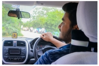

Sharad Pratap Singh
Aspiring software engineer

Personal Details
Nand vihar residency
Jhansi
284001
October 9, 2005
Profile
To utilize my knowledge, skill and given opportunity effectively for professional growth to cotribute in the best possible way for the betterment of the oranizaton and self
Education
- Bachaelor's of technology
Vellore institute of technology
Electronics and computer engineering
- Senior secondary School
Sun International School, Jhansi
84% in senior secondary school. Scored above average marks in Physics, Chemistry and Maths
- Secondary School
Sun International School, Jhansi
92.2% in seconary school. Scored above average marks in all the subjects.
Languages
- C++
Level: Moderate
- Python
Level: Expereinced
- HTML 5
Level: Very good
- CSS 3
Level: Good
- Javascript ES6
Level: Moderate
- SQL
Level: Beginner
Courses
- Data structure and algorithm
- Design and analysis of algorithm
- Data Analytics
- Full Stack web development
- Database managment systems and SQL
- Ethical hacking
- Artificial Intelligence
Qualities
- Good communication and organzing skills.
- Leadership Qualities
- Team player
- Ambivert
- Ability to make sound decisions
- Good in managment
Extracurricular Activities
- Memeber of National Service Scheme Club
- Member of Youth Red Cross Club
- Winner of District Badminton Championship in 2017
- Captain of my School volleyball team in inter-school competition
Contact Me
My hobbies